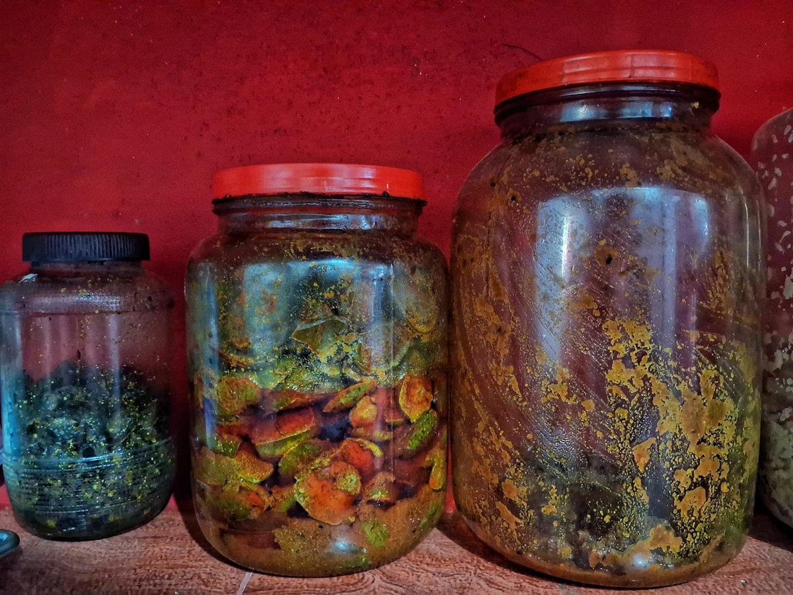
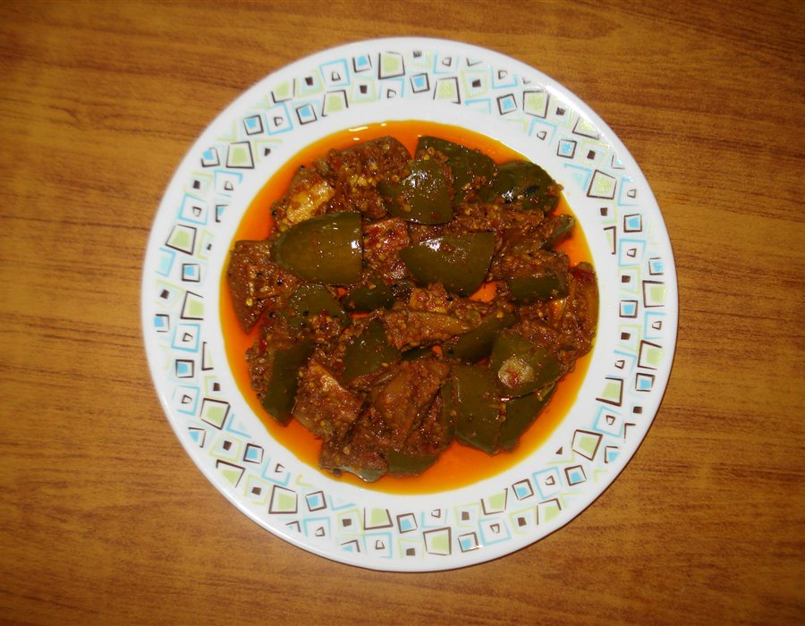
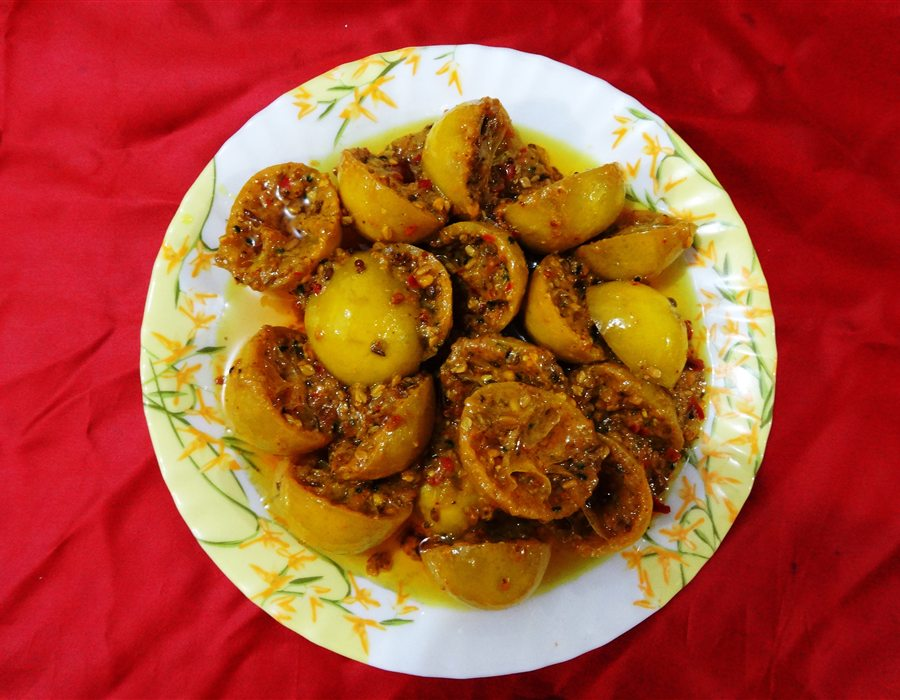
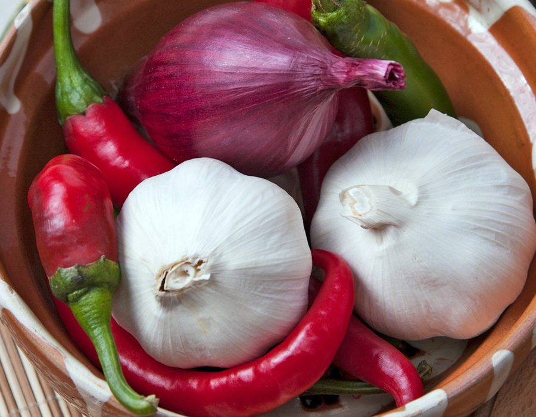
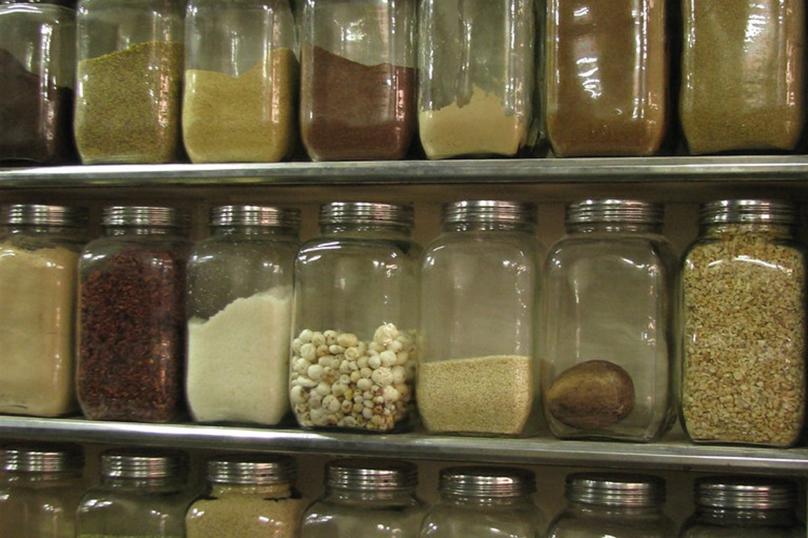

Mar – May
The mango season
Aam ka achar, mixed veg, shatta. Four batches a week, sold on the day.

This is the second entrance to our store: what is in season, what the masala cabinet holds, and how we would put it on your own table. Same jars, same family, explained without the shopkeeper’s sales pitch.
This month · Raw mango batch 04
Pickle follows the fruit, not the production line. This is roughly what the counter looks like through the year.
Mar – May
Aam ka achar, mixed veg, shatta. Four batches a week, sold on the day.
Jun – Aug
Fermenting and bottling. Spice and chutney orders are filled from stock.
Sep – Nov
Festive crates, custom labels and wedding favours. Book ten days ahead.
Dec – Feb
Amla, honey preserves and gentle recipes that suit older palates.
Four shelves in the back room, four kinds of pickle. Start from the one that fits your table, then move between them.
Full catalogue
Shelf one
Whole keri salted under three days of sun, then buried in rai and kashmiri mirchi. Sour first, sweet a month later.

Shelf two
Sharp lemon in mustard oil, amla in jaggery. No masala at all — the two finishes that cut through a heavy meal.

Shelf three
Coarsely ground garlic, ghar-resham chilli and asafoetida. The shelf people come back to twice in one sitting.
Shelf four
Murabba, imli and chundo set with sugar alone and stored dark. Nothing hot anywhere on this shelf.
Five steps, thirty days, no shortcut anywhere. This is the same route every jar has taken since 1948.
Make it yourselfRaw mango straight from Devipura, weighed on the counter scale and never over-ripe.
Three days in the sun until the pieces shrink. This is where the pickle decides its own sourness.
Whole spice, coarsely ground every Monday. No packet masala, ever.
Masala, mango and hot mustard oil in layers, with a weight pressed on top.
Day ten onward we taste with a dry spoon. Nothing leaves the shelf before it is right.
Never added
No preservatives. No artificial colour. No vinegar.
Our storyAchar isn't a side dish—it's the punctuation mark of an Indian meal. Four classic pairings that make simple home cooking unforgettable.
Steaming arhar dal, a spoonful of desi ghee, and a wedge of our mustard-soaked raw mango. The sour tang cuts right through the rich lentils.
Crisp ajwain or aloo parathas straight from the cast-iron tawa. Pair with a dollop of fresh dahi and fiery whole-pod garlic chutney.
Moong dal khichdi on a rainy monsoon evening. Our crunch-intact cauliflower, carrot, and turnip pickle delivers the essential zest.
Whole Pratapgarh wild amla steeped in saffron and unprocessed sugar syrup. Sweet, gentle on the stomach, and rich in natural Vitamin C.
Commercial pickle is made in stainless-steel vats with synthetic acetic acid in three hours. We still sun-ferment our jars for twenty-one days in Varanasi courtyard air.
Jars sit in direct Varanasi sun on cotton cloths. Solar warmth gently activates the mustard seeds without scorching.
Wood-pressed cold extraction from Gorakhpur mustard. Naturally pungent, high smoke point, acts as nature's antibacterial shield.
Coarsely hand-crushed whole spices. Leaving the skins intact preserves volatile aromatics that release when bitten.
No sodium benzoate. No synthetic food colors. Just natural rock salt, mustard oil, and thirty days of patient aging.
"We have been buying the mango pickle since 1984. Whenever relatives come to Varanasi from Mumbai, their first stop isn't Vishwanath temple—it's Gandhi Market for five jars of Achar."
Rajeev Tripathi
Assi Ghat, Varanasi · Patron since 1984
"In Bangalore, authentic UP style achar is impossible to find. Ordering online from Achar felt like opening my nani's pantry. The mustard oil smell when you break the seal is genuine."
Shreya Mishra
Bengaluru · Online order customer
"We ordered 200 customized small jars for my sister's wedding as return favours. Every guest called to ask where we got the garlic pickle from! Truly unforgettable."
Aditya Kapoor
Delhi NCR · Wedding bulk gifting
Three jars are always open at our counter on Gandhi Market lane. Tell us how you eat pickle and we will point you to the right one with an honest spoon.
